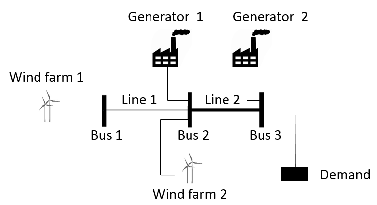

Power Systems
Originally Contributed by: Yury Dvorkin and Miles Lubin
This tutorial demonstrates how to formulate basic power systems engineering models in JuMP using a 3 bus example.
We will consider basic "economic dispatch" and "unit commitment" models without taking into account transmission constraints.
Illustrative example
In the following notes for the sake of simplicity, we are going to use a three bus example mirroring the interface between Western and Eastern Texas. This example is taken from R. Baldick, "Wind and Energy Markets: A Case Study of Texas," IEEE Systems Journal, vol. 6, pp. 27-34, 2012.

For this example, we set the following characteristics of generators, transmission lines, wind farms and demands:
| Quantity | Generator 1 | Generator 2 |
|---|---|---|
| $g_{min}$, MW | 0 | 300 |
| $g_{max}$, MW | 1000 | 1000 |
| $c^g$, $/MWh | 50 | 100 |
| $c^{g0}$, $/MWh | 1000 | 0 |
| Quantity | Line 1 | Line 2 |
|---|---|---|
| $f^{max}$, MW | 100 | 1000 |
| $x$, p.u. | 0.001 | 0.001 |
| Quantity | Wind farm 1 | Wind farm 2 |
|---|---|---|
| $w^{f}$, MW | 150 | 50 |
| $c^{w}$, $/MWh | 50 | 50 |
| Quantity | Bus 1 | Bus 2 | Bus 3 |
|---|---|---|---|
| $d$, MW | 0 | 0 | 15000 |
Economic dispatch
Economic dispatch (ED) is an optimization problem that minimizes the cost of supplying energy demand subject to operational constraints on power system assets. In its simplest modification, ED is an LP problem solved for an aggregated load and wind forecast and for a single infinitesimal moment.
Mathematically, the ED problem can be written as follows:
\[\min \sum_{i \in I} c^g_{i} \cdot g_{i} + c^w \cdot w,\]
where $c_{i}$ and $g_{i}$ are the incremental cost ($/MWh) and power output (MW) of the $i^{th}$ generator, respectively, and $c^w$ and $w$ are the incremental cost ($/MWh) and wind power injection (MW), respectively.
Subject to the constraints:
- Minimum ($g^{\min}$) and maximum ($g^{\max}$) limits on power outputs of generators: $g^{\min}_{i} \leq g_{i} \leq g^{\max}_{i}.$
- Constraint on the wind power injection: $0 \leq w \leq w^f,$ where $w$ and $w^f$ are the wind power injection and wind power forecast, respectively.
- Power balance constraint: $\sum_{i \in I} g_{i} + w = d^f,$ where $d^f$ is the demand forecast.
Further reading on ED models can be found in A. J. Wood, B. F. Wollenberg, and G. B. Sheblé, "Power Generation, Operation and Control", Wiley, 2013.
JuMP Implementation of Economic Dispatch
using JuMP
import DataFrames
import GLPKDefine some input data about the test system.
# Maximum power output of generators
g_max = [1000, 1000]
# Minimum power output of generators
g_min = [0, 300]
# Incremental cost of generators
c_g = [50, 100]
# Fixed cost of generators
c_g0 = [1000, 0]
# Incremental cost of wind generators
c_w = 50
# Total demand
d = 1500
# Wind forecast
w_f = 200Create a function solve_ed, which solves the economic dispatch problem for a given set of input parameters.
function solve_ed(g_max, g_min, c_g, c_w, d, w_f)
# Define the economic dispatch (ED) model
ed = Model(GLPK.Optimizer)
# Define decision variables
@variable(ed, 0 <= g[i = 1:2] <= g_max[i]) ## power output of generators
@variable(ed, 0 <= w <= w_f) ## wind power injection
# Define the objective function
@objective(ed, Min, c_g' * g + c_w * w)
# Define the constraint on the maximum and minimum power output of each
# generator
@constraint(ed, [i = 1:2], g[i] <= g_max[i]) ## maximum
@constraint(ed, [i = 1:2], g[i] >= g_min[i]) ## minimum
# Define the constraint on the wind power injection
@constraint(ed, w <= w_f)
# Define the power balance constraint
@constraint(ed, sum(g) + w == d)
# Solve statement
optimize!(ed)
# return the optimal value of the objective function and its minimizers
return value.(g), value(w), w_f - value(w), objective_value(ed)
endsolve_ed (generic function with 1 method)Solve the economic dispatch problem
(g_opt, w_opt, ws_opt, obj) = solve_ed(g_max, g_min, c_g, c_w, d, w_f);
println("Dispatch of Generators: ", g_opt, " MW")
println("Dispatch of Wind: ", w_opt, " MW")
println("Wind spillage: ", w_f - w_opt, " MW")
println("\n")
println("Total cost: ", obj, "\$")Dispatch of Generators: [1000.0, 300.0] MW
Dispatch of Wind: 200.0 MW
Wind spillage: 0.0 MW
Total cost: 90000.0$Economic dispatch with adjustable incremental costs
In the following exercise we adjust the incremental cost of generator G1 and observe its impact on the total cost.
c_g_scale_df = DataFrames.DataFrame(
Symbol("Dispatch of Generator 1(MW)") => Float64[],
Symbol("Dispatch of Generator 2(MW)") => Float64[],
Symbol("Dispatch of Wind(MW)") => Float64[],
Symbol("Spillage of Wind(MW)") => Float64[],
Symbol("Total cost(\$)") => Float64[],
)
for c_g1_scale in 0.5:0.1:3.0
# Update the incremental cost of the first generator at every iteration.
c_g_scale = [c_g[1] * c_g1_scale, c_g[2]]
# Solve the ed problem with the updated incremental cost
g_opt, w_opt, ws_opt, obj = solve_ed(g_max, g_min, c_g_scale, c_w, d, w_f)
push!(c_g_scale_df, (g_opt[1], g_opt[2], w_opt, ws_opt, obj))
endc_g_scale_df| Dispatch of Generator 1(MW) | Dispatch of Generator 2(MW) | Dispatch of Wind(MW) | Spillage of Wind(MW) | Total cost($) | |
|---|---|---|---|---|---|
| Float64 | Float64 | Float64 | Float64 | Float64 | |
| 1 | 1000.0 | 300.0 | 200.0 | 0.0 | 65000.0 |
| 2 | 1000.0 | 300.0 | 200.0 | 0.0 | 70000.0 |
| 3 | 1000.0 | 300.0 | 200.0 | 0.0 | 75000.0 |
| 4 | 1000.0 | 300.0 | 200.0 | 0.0 | 80000.0 |
| 5 | 1000.0 | 300.0 | 200.0 | 0.0 | 85000.0 |
| 6 | 1000.0 | 300.0 | 200.0 | 0.0 | 90000.0 |
| 7 | 1000.0 | 300.0 | 200.0 | 0.0 | 95000.0 |
| 8 | 1000.0 | 300.0 | 200.0 | 0.0 | 100000.0 |
| 9 | 1000.0 | 300.0 | 200.0 | 0.0 | 105000.0 |
| 10 | 1000.0 | 300.0 | 200.0 | 0.0 | 110000.0 |
| 11 | 1000.0 | 300.0 | 200.0 | 0.0 | 115000.0 |
| 12 | 1000.0 | 300.0 | 200.0 | 0.0 | 120000.0 |
| 13 | 1000.0 | 300.0 | 200.0 | 0.0 | 125000.0 |
| 14 | 1000.0 | 300.0 | 200.0 | 0.0 | 130000.0 |
| 15 | 1000.0 | 300.0 | 200.0 | 0.0 | 135000.0 |
| 16 | 1000.0 | 300.0 | 200.0 | 0.0 | 140000.0 |
| 17 | 300.0 | 1000.0 | 200.0 | 0.0 | 141500.0 |
| 18 | 300.0 | 1000.0 | 200.0 | 0.0 | 143000.0 |
| 19 | 300.0 | 1000.0 | 200.0 | 0.0 | 144500.0 |
| 20 | 300.0 | 1000.0 | 200.0 | 0.0 | 146000.0 |
| 21 | 300.0 | 1000.0 | 200.0 | 0.0 | 147500.0 |
| 22 | 300.0 | 1000.0 | 200.0 | 0.0 | 149000.0 |
| 23 | 300.0 | 1000.0 | 200.0 | 0.0 | 150500.0 |
| 24 | 300.0 | 1000.0 | 200.0 | 0.0 | 152000.0 |
| 25 | 300.0 | 1000.0 | 200.0 | 0.0 | 153500.0 |
| 26 | 300.0 | 1000.0 | 200.0 | 0.0 | 155000.0 |
Modifying the JuMP model in place
Note that in the previous exercise we entirely rebuilt the optimization model at every iteration of the internal loop, which incurs an additional computational burden. This burden can be alleviated if instead of re-building the entire model, we modify a specific constraint(s) or the objective function, as it shown in the example below.
Compare the computing time in case of the above and below models.
function solve_ed_inplace(c_w_scale)
start = time()
obj_out = Float64[]
w_out = Float64[]
g1_out = Float64[]
g2_out = Float64[]
ed = Model(GLPK.Optimizer)
# Define decision variables
@variable(ed, 0 <= g[i = 1:2] <= g_max[i]) ## power output of generators
@variable(ed, 0 <= w <= w_f) ## wind power injection
# Define the objective function
@objective(ed, Min, c_g' * g + c_w * w)
# Define the constraint on the maximum and minimum power output of each generator
@constraint(ed, [i = 1:2], g[i] <= g_max[i]) ## maximum
@constraint(ed, [i = 1:2], g[i] >= g_min[i]) ## minimum
# Define the constraint on the wind power injection
@constraint(ed, w <= w_f)
# Define the power balance constraint
@constraint(ed, sum(g) + w == d)
optimize!(ed)
for c_g1_scale in 0.5:0.01:3.0
@objective(
ed,
Min,
c_g1_scale * c_g[1] * g[1] + c_g[2] * g[2] + c_w_scale * c_w * w,
)
optimize!(ed)
push!(obj_out, objective_value(ed))
push!(w_out, value(w))
push!(g1_out, value(g[1]))
push!(g2_out, value(g[2]))
end
elapsed = time() - start
print(string("elapsed time: ", elapsed, " seconds"))
return obj_out, w_out, g1_out, g2_out
end
solve_ed_inplace(2.0)([75000.0, 75500.0, 76000.0, 76500.0, 77000.0, 77500.0, 78000.0, 78500.0, 79000.0, 79500.0 … 163650.0, 163800.0, 163950.0, 164100.0, 164250.0, 164400.0, 164550.0, 164700.0, 164850.0, 165000.0], [200.0, 200.0, 200.0, 200.0, 200.0, 200.0, 200.0, 200.0, 200.0, 200.0 … 200.0, 200.0, 200.0, 200.0, 200.0, 200.0, 200.0, 200.0, 200.0, 200.0], [1000.0, 1000.0, 1000.0, 1000.0, 1000.0, 1000.0, 1000.0, 1000.0, 1000.0, 1000.0 … 300.0, 300.0, 300.0, 300.0, 300.0, 300.0, 300.0, 300.0, 300.0, 300.0], [300.0, 300.0, 300.0, 300.0, 300.0, 300.0, 300.0, 300.0, 300.0, 300.0 … 1000.0, 1000.0, 1000.0, 1000.0, 1000.0, 1000.0, 1000.0, 1000.0, 1000.0, 1000.0])Adjusting specific constraints and/or the objective function is faster than re-building the entire model.
A few practical limitations of the economic dispatch model
Inefficient usage of wind generators
The economic dispatch problem does not perform commitment decisions and, thus, assumes that all generators must be dispatched at least at their minimum power output limit. This approach is not cost efficient and may lead to absurd decisions. For example, if $ d = \sum{i \in I} g^{\min}{i}$, the wind power injection must be zero, i.e. all available wind generation is spilled, to meet the minimum power output constraints on generators.
In the following example, we adjust the total demand and observed how it affects wind spillage.
demandscale_df = DataFrames.DataFrame(
Symbol("Dispatch of Generators(MW)") => Float64[],
Symbol("Dispatch of Generator 2(MW)") => Float64[],
Symbol("Dispatch of Wind(MW)") => Float64[],
Symbol("Spillage of Wind(MW)") => Float64[],
Symbol("Total cost(\$)") => Float64[],
)
for demandscale in 0.2:0.1:1.5
g_opt, w_opt, ws_opt, obj =
solve_ed(g_max, g_min, c_g, c_w, demandscale * d, w_f)
push!(demandscale_df, (g_opt[1], g_opt[2], w_opt, ws_opt, obj))
end
demandscale_df| Dispatch of Generators(MW) | Dispatch of Generator 2(MW) | Dispatch of Wind(MW) | Spillage of Wind(MW) | Total cost($) | |
|---|---|---|---|---|---|
| Float64 | Float64 | Float64 | Float64 | Float64 | |
| 1 | 0.0 | 300.0 | 0.0 | 200.0 | 30000.0 |
| 2 | 150.0 | 300.0 | 0.0 | 200.0 | 37500.0 |
| 3 | 300.0 | 300.0 | 0.0 | 200.0 | 45000.0 |
| 4 | 450.0 | 300.0 | 0.0 | 200.0 | 52500.0 |
| 5 | 600.0 | 300.0 | 0.0 | 200.0 | 60000.0 |
| 6 | 750.0 | 300.0 | 0.0 | 200.0 | 67500.0 |
| 7 | 900.0 | 300.0 | 0.0 | 200.0 | 75000.0 |
| 8 | 1000.0 | 300.0 | 50.0 | 150.0 | 82500.0 |
| 9 | 1000.0 | 300.0 | 200.0 | 0.0 | 90000.0 |
| 10 | 1000.0 | 450.0 | 200.0 | 0.0 | 105000.0 |
| 11 | 1000.0 | 600.0 | 200.0 | 0.0 | 120000.0 |
| 12 | 1000.0 | 750.0 | 200.0 | 0.0 | 135000.0 |
| 13 | 1000.0 | 900.0 | 200.0 | 0.0 | 150000.0 |
| 14 | 1000.0 | 1050.0 | 200.0 | 0.0 | 165000.0 |
This particular drawback can be overcome by introducing binary decisions on the "on/off" status of generators. This model is called unit commitment and considered later in these notes.
For further reading on the interplay between wind generation and the minimum power output constraints of generators, we refer interested readers to R. Baldick, "Wind and Energy Markets: A Case Study of Texas," IEEE Systems Journal, vol. 6, pp. 27-34, 2012.
Transmission-infeasible solution
The ED solution is entirely market-based and disrespects limitations of the transmission network. Indeed, the flows in transmission lines would attain the following values:
\[f_{1-2} = 150 MW \leq f_{1-2}^{\max} = 100 MW\]
\[f_{2-3} = 1200 MW \leq f_{2-3}^{\max} = 1000 MW\]
Thus, if this ED solution was enforced in practice, the power flow limits on both lines would be violated. Therefore, in the following section we consider the optimal power flow model, which amends the ED model with network constraints.
The importance of the transmission-aware decisions is emphasized in E. Lannoye, D. Flynn, and M. O'Malley, "Transmission, Variable Generation, and Power System Flexibility," IEEE Transactions on Power Systems, vol. 30, pp. 57-66, 2015.
Unit Commitment model
The Unit Commitment (UC) model can be obtained from ED model by introducing binary variable associated with each generator. This binary variable can attain two values: if it is "1", the generator is synchronized and, thus, can be dispatched, otherwise, i.e. if the binary variable is "0", that generator is not synchronized and its power output is set to 0.
To obtain the mathematical formulation of the UC model, we will modify the constraints of the ED model as follows:
\[g^{\min}_{i} \cdot u_{t,i} \leq g_{i} \leq g^{\max}_{i} \cdot u_{t,i},\]
where $u_{i} \in \{0,1\}.$ In this constraint, if $u_{i} = 0$, then $g_{i} = 0$. On the other hand, if $u_{i} = 1$, then $g^{min}_{i} \leq g_{i} \leq g^{max}_{i}$.
For further reading on the UC problem we refer interested readers to G. Morales-Espana, J. M. Latorre, and A. Ramos, "Tight and Compact MILP Formulation for the Thermal Unit Commitment Problem," IEEE Transactions on Power Systems, vol. 28, pp. 4897-4908, 2013.
In the following example we convert the ED model explained above to the UC model.
function solve_uc(g_max, g_min, c_g, c_w, d, w_f)
# Define the unit commitment (UC) model
uc = Model(GLPK.Optimizer)
# Define decision variables
@variable(uc, 0 <= g[i = 1:2] <= g_max[i]) ## power output of generators
@variable(uc, u[i = 1:2], Bin) ## Binary status of generators
@variable(uc, 0 <= w <= w_f) ## wind power injection
# Define the objective function
@objective(uc, Min, c_g' * g + c_w * w)
# Define the constraint on the maximum and minimum power output of each
# generator.
@constraint(uc, [i = 1:2], g[i] <= g_max[i] * u[i]) ## maximum
@constraint(uc, [i = 1:2], g[i] >= g_min[i] * u[i]) ## minimum
# Define the constraint on the wind power injection
@constraint(uc, w <= w_f)
# Define the power balance constraint
@constraint(uc, sum(g) + w == d)
# Solve statement
optimize!(uc)
status = termination_status(uc)
if status != MOI.OPTIMAL
return status, zeros(length(g)), 0.0, 0.0, zeros(length(u)), Inf
end
return status,
value.(g),
value(w),
w_f - value(w),
value.(u),
objective_value(uc)
endsolve_uc (generic function with 1 method)Solve the economic dispatch problem
status, g_opt, w_opt, ws_opt, u_opt, obj =
solve_uc(g_max, g_min, c_g, c_w, d, w_f)
println("Dispatch of Generators: ", g_opt[:], " MW")
println("Commitments of Generators: ", u_opt[:])
println("Dispatch of Wind: ", w_opt, " MW")
println("Wind spillage: ", w_f - w_opt, " MW")
println("\n")
println("Total cost: ", obj, "\$")Dispatch of Generators: [1000.0, 300.0] MW
Commitments of Generators: [1.0, 1.0]
Dispatch of Wind: 200.0 MW
Wind spillage: 0.0 MW
Total cost: 90000.0$Unit Commitment as a function of demand
After implementing the UC model, we can now assess the interplay between the minimum power output constraints on generators and wind generation.
uc_df = DataFrames.DataFrame(
Symbol("Commitment of Generator 1(MW)") => Float64[],
Symbol("Commitment of Generator 2(MW)") => Float64[],
Symbol("Dispatch of Generator 1(MW)") => Float64[],
Symbol("Dispatch of Generator 2(MW)") => Float64[],
Symbol("Dispatch of Wind(MW)") => Float64[],
Symbol("Spillage of Wind(MW)") => Float64[],
Symbol("Total cost(\$)") => Float64[],
)
for demandscale in 0.2:0.1:1.5
status, g_opt, w_opt, ws_opt, u_opt, obj =
solve_uc(g_max, g_min, c_g, c_w, demandscale * d, w_f)
if status == MOI.OPTIMAL
push!(
uc_df,
(u_opt[1], u_opt[2], g_opt[1], g_opt[2], w_opt, ws_opt, obj),
)
else
println("Status: $status for demandscale = $demandscale \n")
end
endStatus: INFEASIBLE for demandscale = 1.5uc_df| Commitment of Generator 1(MW) | Commitment of Generator 2(MW) | Dispatch of Generator 1(MW) | Dispatch of Generator 2(MW) | Dispatch of Wind(MW) | Spillage of Wind(MW) | Total cost($) | |
|---|---|---|---|---|---|---|---|
| Float64 | Float64 | Float64 | Float64 | Float64 | Float64 | Float64 | |
| 1 | 1.0 | 0.0 | 100.0 | 0.0 | 200.0 | 0.0 | 15000.0 |
| 2 | 1.0 | 0.0 | 250.0 | 0.0 | 200.0 | 0.0 | 22500.0 |
| 3 | 1.0 | 0.0 | 400.0 | 0.0 | 200.0 | 0.0 | 30000.0 |
| 4 | 1.0 | 0.0 | 550.0 | 0.0 | 200.0 | 0.0 | 37500.0 |
| 5 | 1.0 | 0.0 | 700.0 | 0.0 | 200.0 | 0.0 | 45000.0 |
| 6 | 1.0 | 0.0 | 850.0 | 0.0 | 200.0 | 0.0 | 52500.0 |
| 7 | 1.0 | 0.0 | 1000.0 | 0.0 | 200.0 | 0.0 | 60000.0 |
| 8 | 1.0 | 1.0 | 850.0 | 300.0 | 200.0 | 0.0 | 82500.0 |
| 9 | 1.0 | 1.0 | 1000.0 | 300.0 | 200.0 | 0.0 | 90000.0 |
| 10 | 1.0 | 1.0 | 1000.0 | 450.0 | 200.0 | 0.0 | 105000.0 |
| 11 | 1.0 | 1.0 | 1000.0 | 600.0 | 200.0 | 0.0 | 120000.0 |
| 12 | 1.0 | 1.0 | 1000.0 | 750.0 | 200.0 | 0.0 | 135000.0 |
| 13 | 1.0 | 1.0 | 1000.0 | 900.0 | 200.0 | 0.0 | 150000.0 |
This page was generated using Literate.jl.